考研之操作系统——内存管理
内存管理
内存基础知识
基本概念
- 内存：可存放数据。程序执行前需要先放到内存中才能被$CPU$处理。
- 存储单元：内存中划分出用于存储的空间，每个存储单元对应一个内存地址。计算机按字节编址，则每个存储单元大小为$1B$；如果按字编址，每个字长$16$位，则每个存储单元大小为$2B$。
- 编译：将高级语言翻译为机器语言。
- 链接：由链接程序将编译后形成的一组目标模块，以及所需库函数链接在一起，形成一个完整的装入模块和逻辑地址。
- 装入（装载）：由装入程序将装入模块装入内存运行，装入后形成物理地址。装入的方式有绝对装入、可重定位装入以及动态装入。
内存管理
- 操作系统负责内存空间的分配和回收。
- 操作系统需要通过技术从逻辑上对内存空间进行扩充。
- 操作系统需要对地址进行转换，负责逻辑地址和物理地址的转换。
- 内存保护：操作系统需要提供内存保护功能，让各进程在各自存储空间内运行，互不干扰。
- 方法一：在$CPU$中设置一对上、下限寄存器，存放进程的上、下限地址。
- 方法二：采用重定位寄存器和界地址寄存器进行越界检查。重定位寄存器中存放进程的起始物理地址，界地址寄存器存放进程的最大逻辑地址。
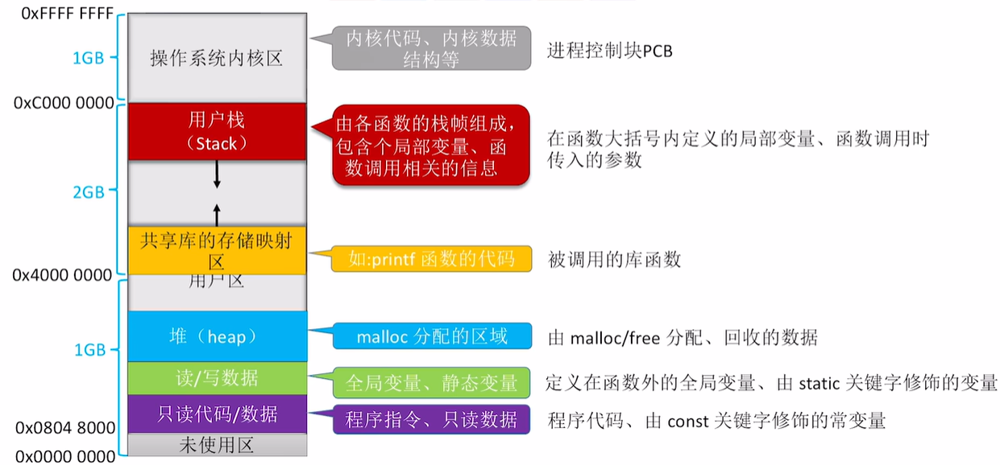
连续分配管理方式
单一连续分配
单一连续分配方式中，内存被分为系统区和用户区。系统区位于低地址部分，存放操作系统相关数据；用户区用于存放用户进程相关数据。内存中只能有一道用户程序，该程序独占整个用户区空间。
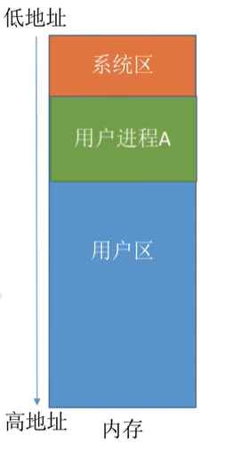
- 优点：实现简单，无外部碎片，不一定需要内存保护。
- 缺点：只能用于单用户、单任务的操作系统，有内部碎片。
固定分区分配
将整个用户空间划分为若干个固定大小的分区，每个分区中只有一道作业。如果分区大小相等，则缺乏灵活性，但是适合一台计算机控制多个相同对象的场合；分区大小不等，增加灵活性，可以满足不同大小进程的需求。
操作系统通过分区说明表确定分区的大小、起始地址和状态，无外部碎片。
动态分区分配
不预先划分内存分区，在进程装入内存时根据大小动态建立分区。操作系统通常使用空闲分区表或空闲分区链来保存信息，并通过一定的分配算法来分配内存空间。
内部碎片指的是分配给进程的内存区域中没有用上的部分，外部碎片指的是内存中因过小而难以使用的空闲分区。动态分区分配会产生外部碎片，可以通过紧凑技术解决外部碎片。
动态分区分配算法
首次适应算法(First Fit)
空闲分区以地址递增的次序排列，每次都从低地址开始查找，找到第一个大小能满足要求的空闲分区。
最佳适应算法(Best Fit)
空闲分区按照容量递增次序链接，每次分配内存时顺序查找第一个能满足要求的空闲分区。这种算法会产生很多难以利用的外部碎片。
最坏适应算法(Worst Fit)
空闲分区按照容量递减次序链接，每次分配内存时顺序查找第一个大小能满足要求的空闲分区。这种算法会导致较大空闲区被迅速用完，无法满足后续大进程。
邻近适应算法(Next Fit)
空闲分区以地址递增顺序排列（循环链表），每次分配内存时从上次查找结束的位置开始查找空闲分区链，找到第一个大小满足要求的空闲分区。
基本分页存储管理
基本概念
将内存空间分为一个个大小相等的分区，每个分区就是一个“页框”，编号就是页框号（也称为页帧号、内存块号、物理块号、物理页号），从$0$开始。
将进程的逻辑地址空间也分为与页框大小相等的一个个部分，每个部分称为“页或页面”，编号就是页号，从$0$开始。
分页存储：操作系统以页框为单位为各个进程分配内存空间，进程的每个页面分别放入一个页框中。各个页面不必连续存放，可以放到不相邻的各个页框中。
页表：操作系统为每个进程创建一张页表，其中存放了页面在内存的位置。每个页表项由“页号”和“块号”组成，记录了页面和内存块的映射关系。
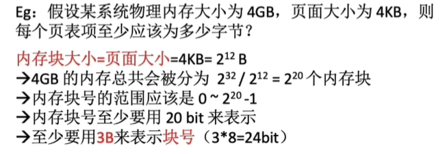
注意：页号是隐含的，知道页表的起始地址后，由于每个页表项是$3B$，那么页号$X=3$块号$i+1$，整个页表需要$3(n+1)B$存储（从$0$开始到$n$）。
逻辑地址$A$对应的物理地址$=P$号页面在内存中的起始地址$+$页内偏移量$W$，这样完成了基本的地址转换。
1 | 在某计算机系统中，页面大小是 50B。某进程逻辑地址空间大小为 200B，则逻辑地址 110 对应的页号、页内偏移量是多少？ |
当计算机用$32$位二进制表示逻辑地址，页面大小为$4KB=4096B$
$0$号页的逻辑地址应当为：
$00000000000000000000$$000000000000$~$00000000000000000000$$111111111111$
$1$号页的逻辑地址应当为：
$00000000000000000001$$000000000000$~$00000000000000000001$$111111111111$
由此可以发现，逻辑地址前$20$位代表页号，后$12$位代表业内偏移量。因此，当页面大小是$2^kB$时，逻辑地址的低$k$位代表页内偏移量，高位代表页号。
基本地址变换机构
设页面大小为$L$，逻辑地址$A$到物理地址$E$的变换过程如下：
- 根据逻辑地址计算页号$P$和页内偏移量$W$。
- 判断页号是否越界。
- 查询页表，找到页号对应的内存块号$b$。
- $E=b*L+M$计算物理地址。
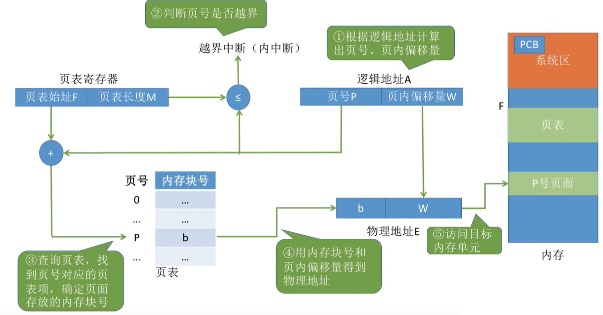
具有快表的地址变换机构
快表$(TLB)$：一种访问速度比内存快很多的高速缓存，用来存放最近访问的页表项的副本，可以加速地址变换的速度。与之对应，内存中的页表常称为慢表。
假设进程执行过程中依次访问$(0,0)、(0,4)、(0,8)$这几个地址，则过程如下：
- 最开始快表中没有内容，因此访问$(0,0)$没有命中，需要访问页表获取内存块号，同时在快表中进行记录。
- 访问$(0,4)$和$(0,8)$时均命中快表，获取内存块号并计算物理地址。
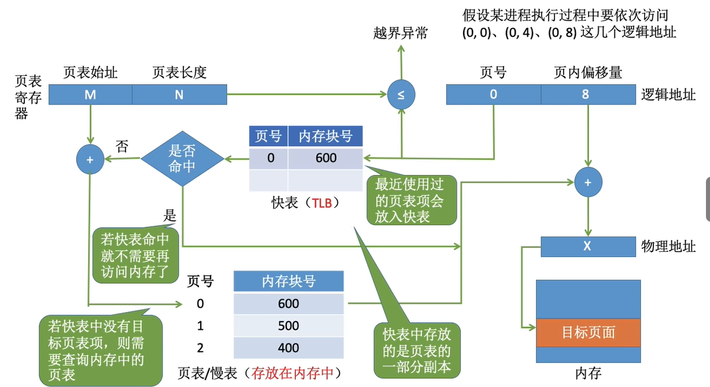
多级页表
为解决页表很大的问题，可将页表进行分组，使每个内存块刚好可以放入一个分组。为离散分配的页表在建立一张页表，称为页目录表，也称为外层页表、顶层页表。$32$位的逻辑空间，页面大小为$4KB$，可以如下进行划分：
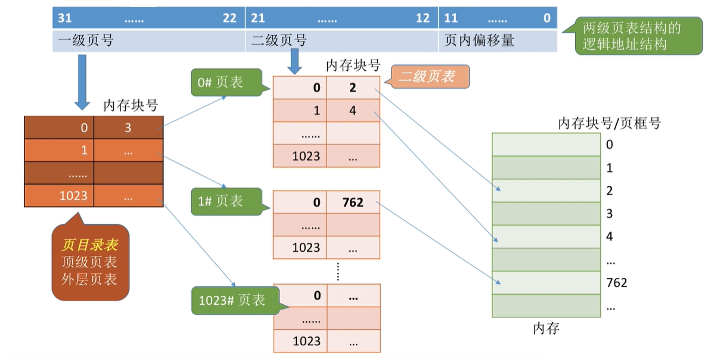
地址变换过程如下：
- 按照地址结构将逻辑地址拆成三部分。
- 从$PCB$中读出页目录表起始地址，根据一级页号查表，获得二级页表的存放位置。
- 根据二级页表获得内存块号。
- 结合页内偏移量获得物理地址。
此外，由于内存空间有限，操作系统可以将长时间不访问的页面换出到外存，进程访问时会产生缺页中断，然后再调入内存。
- 采用多级页表机制时，各级页表的大小不能超过一个页面的大小。
- 采用二级页表，访问一个物理地址需要进行三次访存，即$n$级页表需要$n+1$次访存。
基本分段存储管理
- 进程的地址空间：按照程序自身的逻辑关系划分为若干个段，每个段都有一个段名，每段从$0$开始编址。
- 内存分配规则：以段为单位进行分配，每个段在内存中占据连续空间，但各段之间可以不相邻。
- 逻辑地址结构由段号（段名）和段内地址（段内偏移量）组成。段号的位数决定了每个进程最多可以分几个段。段内地址位数决定了每个段的最大长度是多少。
段表：操作系统为每个进程创建一张段表，记录了各个逻辑段的存放位置。每个段对应一个段表项，包含起始位置和段的长度。各个段表项的长度是相同的，且段号可以是隐含的，不占存储空间。
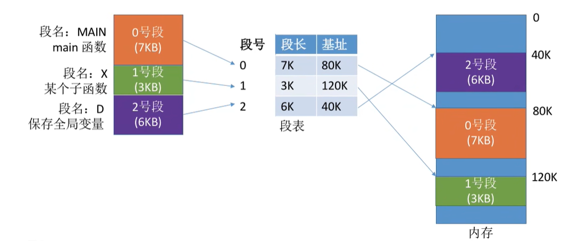
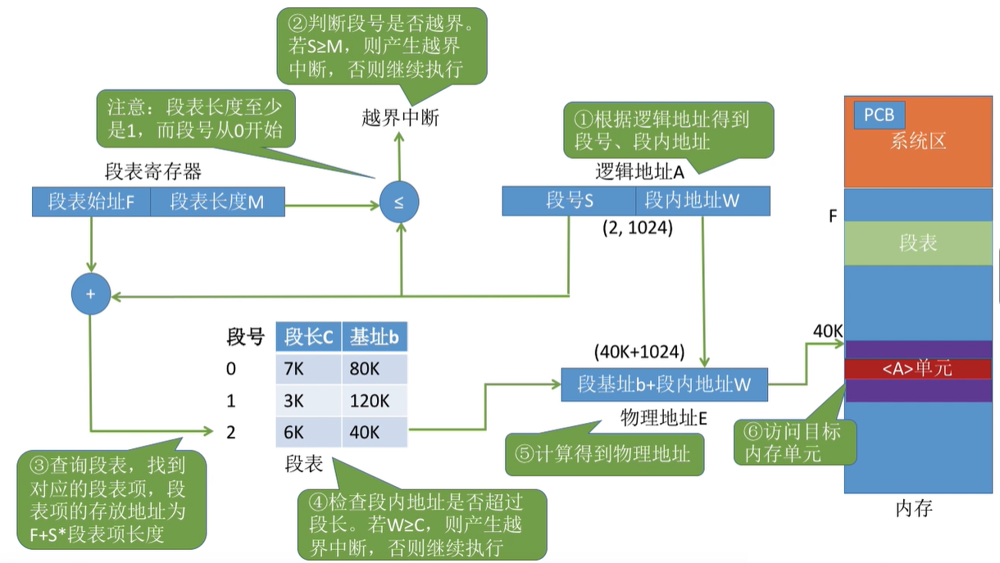
分段、分页管理的对比：
- 页是信息的物理单位，分页是为了实现离散分配，提高内存利用率，用户不可见。段是信息的逻辑单位，分段是为了满足用户需求，对用户可见。
- 页的大小固定，段的大小不固定。
- 分页的用户进程地址空间是一维的，分段的用户进程地址空间是二维的，需要段名和段内地址。
- 分段比分页更容易实现信息的共享和保护。共享时只需要让各进程段表项指向同一个段即可。
段页式管理
将进程按逻辑模块分段，然后再将各段分页。这样的逻辑地址由段号、页号和页内偏移量组成。段号的位数决定了每个进程最多可以分几个段，页号的位数决定了每个段最多有多少页，页内偏移量决定了页面大小和内存块大小。
地址转换如下所示，一共需要三次访存才能访问目标单元，因此也可以引入快表，记录段号和页号，可以快速命中。（这里的页表长度指的是一个段被分成了几个页面）
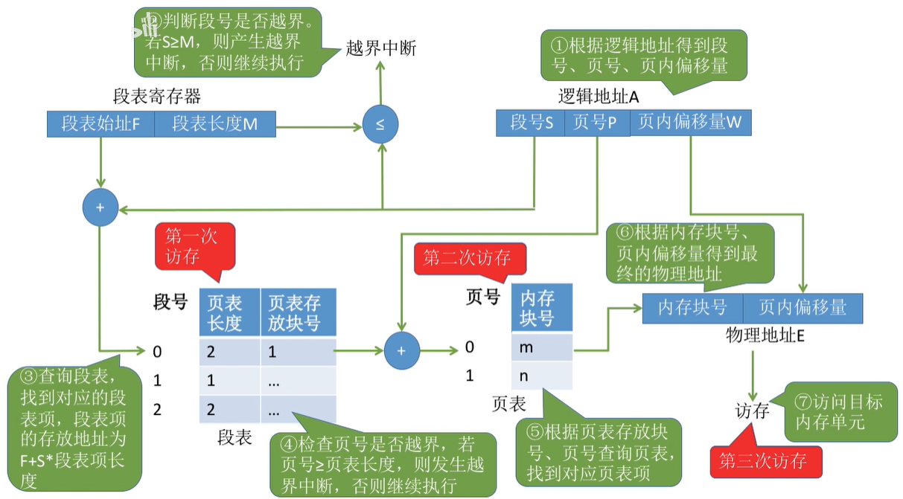
虚拟内存
基本概念
- 传统存储管理方式的特征：
- 一次性：作业一次性全部装入内存后才能开始运行。
- 驻留性：作业被装入内存后会一直驻留在内存中，直至结束。
- 虚拟内存：基于局部性原理，在程序装入时将很快会用到的部分装入内存，暂时用不到的部分留在外存，就可以让程序开始运行。该技术的实现需要建立在离散分配的基础上。
- 多次性：作业被分成多个部分多次装入内存。
- 对换性：无需一直驻留，而是在不断被换入换出。
- 虚拟性：逻辑上扩充内存容量。
请求分页存储管理
请求页表
- 内存块号：页面对应的内存块编号。
- 状态位：是否已调入内存。
- 访问字段：记录最近被访问过几次，或者上次访问的时间，为置换算法提供参考。
- 修改位：页面调入后是否被修改。
- 外存地址：页面在外存的地址。
缺页中断机构
- 在请求分页系统中，当要访问的页面不在内存时，会产生一个缺页中断，然后由操作系统的缺页中断处理程序处理中断。此时缺页的进程阻塞，调页完成后再将其唤醒。
- 如果内存中有空闲块，则为进程分配一个空闲块，将所缺页面装入该块，并修改页表中相应的页表项。
- 如果内存中没有空闲块，则由页面置换算法选择一个页面淘汰，若该页面在内存期间被修改过，则要将其写回外存。未修改过的页面不用写回外存。
地址变换机构
快表中有的页面一定在内存中，如果页面被换出，则需要删除快表中的表项，防止发生错误。换入换出是慢速$I/O$操作，因此频繁换入换出会消耗大量时间。
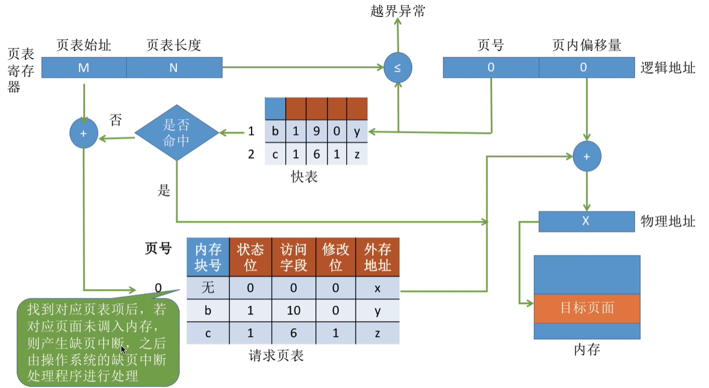
页面置换算法
最佳置换算法(OPT, Optimal)
每次选择淘汰的页面将是以后永不使用，或者最长时间内不再被访问的页面，这样可以保证最低的缺页率。由于该算法需要提前预判访问序列，但在实际中无法做到，因此该算法无法实现。
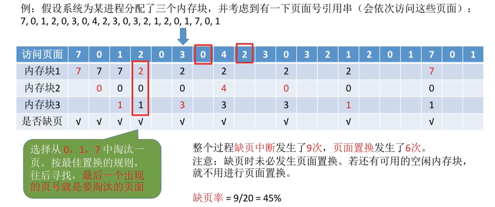
先进先出置换算法(FIFO)
每次选择淘汰的页面是最早进入内存的页面。把调入内存的页面根据先后顺序排成队列，每次换出队头页面即可。
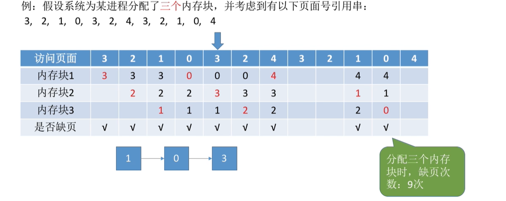
该算法会出现$Belady$异常，也就是为进程分配的物理块增大时，缺页次数不减反增。
最近最久未使用置换算法(LRU)
每次选择淘汰的页面是最近最久未使用的页面。使用访问字段记录该页面自上次被访问以来所经历的时间，时间最长的就换出。
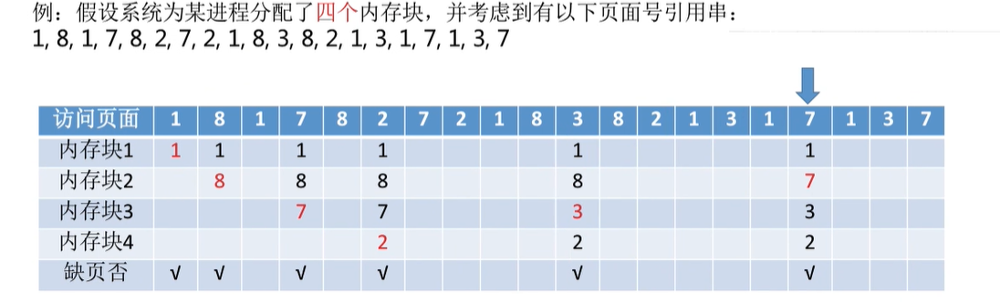
该算法性能好，但是开销大，实现比较困难。
时钟置换算法(CLOCK)
为每个页面设置一个访问位，再将内存中的页面都通过链接指针链接成一个循环队列。
- 当某页被访问时，访问位置为$1$。
- 换出时只需要检查访问位置，如果为$0$，则可以换出；如果是$1$，则将其置为$0$，暂不换出，继续扫描。
- 若第一轮扫描中所有页面都是$1$，则将这些页面的访问位依次置为$0$后，再进行第二轮扫描。
改进方法：增加修改位，修改时将其置为$1$。在其他条件相同时，优先淘汰没有修改过的页面。下面用（访问位，修改位）表示。
第一轮从当前位置扫描到第一个$(0,0)$的帧用于替换，但不改变任何标志位。如下是需要扫描一轮的情况：
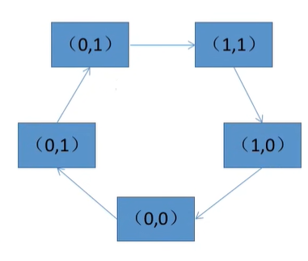
若第一轮扫描失败，则重新扫描，查找第一个$(0,1)$的帧用于替换，并将所有扫描过的帧访问位设置为$0$。如下是需要扫描两轮的情况：
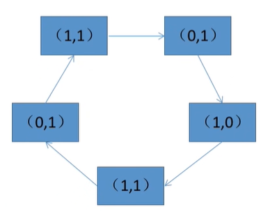
若第二轮扫描失败，则重新扫描，查找第一个$(0,0)$的帧用于替换，但不改变任何标志位。如下是需要扫描三轮的情况：
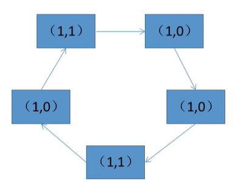
若第三轮扫描失败，则重新扫描，查找第一个$(0,1)$的帧用于替换。如下是需要扫描四轮的情况：
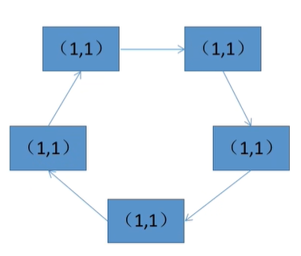
由于第二轮已经将所有帧的访问位设为$0$，因此经过第三轮和第四轮肯定有一个被选中。
页面分配策略
驻留集：请求分页存储管理中给进程分配的物理块集合。驻留集过大会导致并发度下降，驻留集过小会导致缺页频繁。
工作集：某段时间间隔内进程实际访问页面的集合。
固定分配：分配固定数量的物理块，驻留集大小不变。
- 可变分配：先分配一定数量的物理块，再根据情况调整。
- 局部置换：发生缺页时只能选进程自己的物理块进行置换。
- 全局置换：可以将操作系统保留的空闲物理块分配给缺页进程，也可以将别的进程持有的物理块置换到外存，再分配给缺页进程。
- 抖动（颠簸）：刚换出的页面马上要换入内存，刚换入的页面马上要换出到外存。产生抖动的主要原因是进程频繁访问的页面数目高于可用的物理块数。
固定分配局部置换
系统为每个进程分配一定数量的物理块。若进程在运行中发生缺页，则只能从该进程在内存中的页面中选出一页换出，然后调入需要的页面。该算法的问题是很难在刚开始就确定应为每个进程分配多少个物理块才算合理。
可变分配全局置换
刚开始为每个进程分配一定数量的物理块，操作系统保持一个空闲物理块队列。当某进程发生缺页时，从空闲物理块中取出一块分配给该进程；若已无空闲物理块，则可选择一个未锁定的页面换出外存，再将该物理块分配给缺页的进程。该算法中被选择调出的页可能是系统中任何一个进程的页，因此这个被选中的进程拥有的物理块会减少，缺页率会增加。
可变分配局部置换
刚开始为每个进程分配一定数量的物理块。当某进程发生缺页时，只允许从该进程自己的物理块中选出一个进行换出外存。如果进程在运行中频繁地缺页，系统会为该进程多分配几个物理块，直至该进程缺页率趋势适当程度。反之，如果进程在运行中缺页率特别低，则可适当减少分配给该进程的物理块。
页面调入的时机
- 预调页策略（运行前调入）：预测不久之后可能访问到的页面，将它们预先调入内存，但目前预测成功率只有$50%$左右。这种策略主要用于进程的首次调入，由程序员指出应该先调入哪些部分。
- 请求调页策略（运行时调入）：进程在运行期间发现缺页时才将所缺页面调入内存。这种策略调入的页面一定会被访问到，但由于每次只能调入一页，而每次调页都要磁盘$I/O$操作，因此$I/O$开销较大。
页面调入的地方
外存（磁盘）中包括对换区和文件区。对换区读写速度快，采用连续分配方式；文件区读写速度慢，采用离散分配方式。
从何处调入页面：
- 系统拥有足够的对换区空间：页面的调入、调出都是在内存与对换区之间进行。在进程运行前，将相关数据从文件区复制到对换区。
- 系统缺少足够的对换区空间：凡是不会被修改的数据都直接从文件区调入，对于可能被修改的部分，换出时需写回磁盘对换区，下次需要时再从对换区调入。
- $UNIX$方式：运行之前进程有关的数据全部放在文件区，未使用过的页面都可从文件区调入。若被使用过的页面需要换出到外存，则写回对换区，下次需要时从对换区调入。
内存映射文件
传统文件访问通过$open$系统调用打开文件，$seek$将读写指针移到某个位置，$read$读入数据，$write$写入数据。
内存映射文件$(Memory-Mapped{\ }Files)$：操作系统向上层程序员提供的功能（系统调用）。
- 进程可通过系统调用让操作系统将文件映射到进程的虚拟地址空间。
- 以访问内存的方式读写文件。
- 进程关闭文件时，操作系统负责将数据写回磁盘，并解除内存映射。
- 多个进程可以映射同一个文件，方便共享。